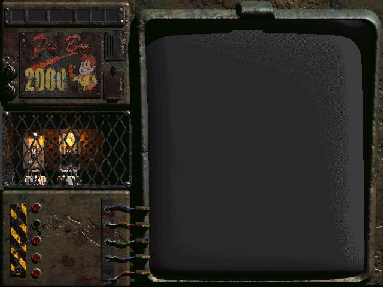
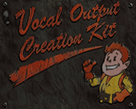
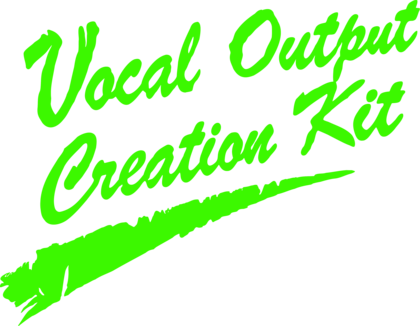

Fallout 2 Voice Modding Pipeline
CREDITS
CREATED & MANAGED BY
Fede the Dwelt Vauller
VOICE ACTORS
SKEETER · VEGEIR
Joshua Luther
KEITH WRIGHT
dar_duck
ERIC
KALLEKANNIBAL
KAGA · CHUCK & BUCK DUNTON
Richard Manzano - Sp3lunky
METZGER
Bailey Geen - stab0talksVA
ZAIUS
sedatednerves
CHRISTOPHER WRIGHT
Halyze
JENNY
Kiti Celine
ZOMAK THE DESTROYER · OLD JOE
Lewis Saunders
BROTHER PAUL
Matt Bartlett
BIG JESUS MORDINO · VORTIS
Enrico Leone
TORR BUCKNER · FRANCIS
David Pastore-Theriaque
LOUISE
Billy Graves
CHAD
Sn8kezz
KROM
Jeremy Lindsay
LYDIA
Juliet Blank
CHRISSY
Megan Rowe
ARTHUR PENDRAGON
Tsovir
HANK
PaleFreak
ANN
Jessica Baxter
TUBBY · DARION
Dmitry Medvedenko
PAINLESS DOC JOHNSON
Mike Harrison-Wood
DOCTOR ANDREW
Charles W. Morton
FANNIE MAE
Rin Moore
QUALITY ASSURANCE
C. Jared Castor
LebronJane
ART
Milky Shakester - Fallout Font
Jaqinta - Fallout 2 Font Editor
SPECIAL THANKS
Goat_Boy - Talking Heads Mod
Black_Electric - THAT Mod
No Mutants Allowed Forum
The Fallout 2 Community
Fallout 2 Voice Modding Pipeline
CREDITS
CREATED & MANAGED BY
Fede the Dwelt Vauller
VOICE ACTORS
SKEETER · VEGEIR
Joshua Luther
KEITH WRIGHT
dar_duck
ERIC
KALLEKANNIBAL
KAGA · CHUCK & BUCK DUNTON
Richard Manzano - Sp3lunky
METZGER
Bailey Geen - stab0talksVA
ZAIUS
sedatednerves
CHRISTOPHER WRIGHT
Halyze
JENNY
Kiti Celine
ZOMAK THE DESTROYER · OLD JOE
Lewis Saunders
BROTHER PAUL
Matt Bartlett
BIG JESUS MORDINO · VORTIS
Enrico Leone
TORR BUCKNER · FRANCIS
David Pastore-Theriaque
LOUISE
Billy Graves
CHAD
Sn8kezz
KROM
Jeremy Lindsay
LYDIA
Juliet Blank
CHRISSY
Megan Rowe
ARTHUR PENDRAGON
Tsovir
HANK
PaleFreak
ANN
Jessica Baxter
TUBBY · DARION
Dmitry Medvedenko
PAINLESS DOC JOHNSON
Mike Harrison-Wood
DOCTOR ANDREW
Charles W. Morton
FANNIE MAE
Rin Moore
QUALITY ASSURANCE
C. Jared Castor
LebronJane
ART
Milky Shakester - Fallout Font
Jaqinta - Fallout 2 Font Editor
SPECIAL THANKS
Goat_Boy - Talking Heads Mod
Black_Electric - THAT Mod
No Mutants Allowed Forum
The Fallout 2 Community
CHANGELOG
WIP
Louise (Redding), Zaius (Broken Hills)
v1.12
Added voices: Hank (Gecko), Chrissy (Broken Hills), Old Joe (Vault City), Arthur Pendragon (Special Encounter), Vegeir (Ghost Farm)
Fixed Kaga sometimes not starting the Talking Head menu or spawning too far away for combat
v1.11
Added voices: Lydia (Vault City), Francis (Broken Hills)
Fixed Talking Head bugs related to Don and Kurisu (head was not displayed)
v1.10
Fixed several bugs related to text concatenation and audio misplacement
Full Changelog ↗
???
There's nothing here.
It's an empty button.
What are you trying to do?